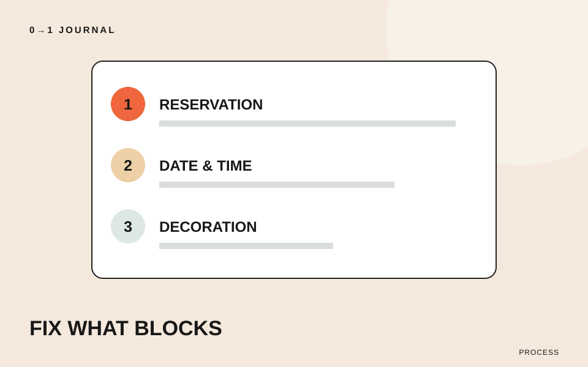

公開前に三つの指摘が届き、どれから手を付けるか迷う。そんな場面では、直しやすさだけで選ぶ前に「放置すると誰が何をできないか」を書いてみましょう。この記事では、一つのサイトを公開したい人が修正順を決めるための、小さな整理方法を提案します。
題材は架空の地域演奏会サイトです。目的は、公演を知った人が日程を確認し、予約ページへ進めること。予約先の不具合、日程の読みにくさ、装飾のずれが同時に見つかったという模擬の設定で考えます。
指摘を「起きたこと」と「困ること」に分ける
「予約のところが変」「文字が小さい」「線がずれている」だけでは、深刻さを比べられません。まず確認した画面と操作を書き、次に利用者に生じる困りごとを添えます。原因が分からない段階で「CSSが原因」などと決めつける必要はありません。
- 予約リンクを開くと別公演の案内になる。この公演を予約できない。
- スマートフォンで日程の行が重なる。開始時刻を読み取れない。
- 出演者紹介の飾り線が隣の欄とそろわない。紹介文と名前は読める。
三つ目も修正候補ですが、今回の観察では情報を読むことは妨げていません。「見た目の問題」という一括りでは、文字の重なりとの違いを説明できない点に注目してください。
代わりの進み方があるかを確認する
同じ不具合でも、別の方法で目的を果たせるかによって判断は変わります。この例では、予約への入口は一つだけ、日程はトップにも掲載、飾り線は出演者紹介だけにある設定とします。
日程が別の場所にあるからといって、重なりを放置してよいわけではありません。初めての人がその別の場所に気付けるかも確認します。代替手段は「制作者が知っている裏道」ではなく、ページの案内からたどれるものとして考えましょう。
影響が分からないときは「軽微」とせず、未確認と記録します。たとえば予約リンクは一度だけの現象か、同じ手順で再現するかを調べます。調査が必要な問題を、見た目の微調整に埋もれさせないためです。
今回の順番を、理由とセットで決める
この設定なら、予約先、日程の重なり、飾り線の順を仮の着手順にします。唯一の予約経路が誤っていることを先に扱い、次に来場判断に必要な時刻を読める状態にする、という理由です。予約先を直す前には、主催者が指定した正しい行き先を確認します。
ただし「機能はいつでも見た目より先」という固定ルールにはしません。文字が全面に重なり、予約リンク自体が探せないなら、表示の修正を先に行う判断もあります。問題の種類より、今回の利用をどこで止めているかを見ます。
作業時間の見積もりは、その後で加えます。重大な問題の解決に時間がかかる場合は、公開担当と公開時期や暫定の案内を相談してください。簡単な修正を先に片付けても、残った問題の重要度が下がったことにはなりません。
直した後に何を見ればよいかも残す
予約リンクなら「正しい公演名と開催日が移動先に表示される」、日程なら「問題が出た端末と画面幅で開始時刻を末尾まで読める」を再確認の条件にします。「変更した」と「問題が解消した」を別に記録しましょう。
共通の部品を直す場合は、同じ部品を使う別ページも確認対象に入れます。今回直した画面だけで判断しないためです。制作全体を終える条件がまだ曖昧なら、完成条件を5つ書く記事で先に整理できます。この記事の修正順は、決めた条件に向けて着手する順番です。
15分を目安に、三つの指摘を並べ直す
制作中のサイトから三つの指摘を選び、それぞれに「困る人と行動」「代替手段」「再確認の条件」を一文ずつ書きます。まだ実際の指摘がなければ、上の模擬案件を使ってください。
順番を付けたら、一番目と二番目を入れ替える理由があるか考えます。判断に足りない情報が出たら、推測で埋めずに確認事項として残しましょう。操作ごとの確認方法を練習するには、QAの無料レッスンも参照できます。
記載内容へのご質問や訂正のご連絡は、hello@junkbranding.comまでお願いします。